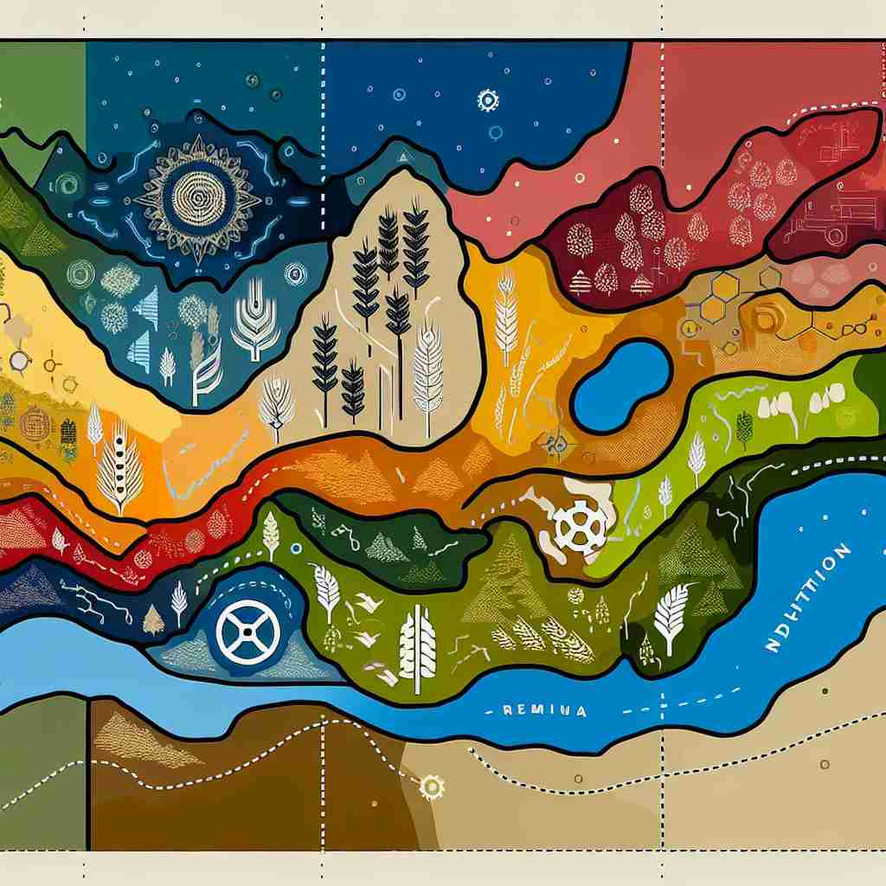

💬 The Amazon rainforest region is home to many colorful birds. 亚马逊雨林地区栖息着许多色彩斑斓的鸟类。

💬 This area is known as an agricultural region in Iowa. 这个地区被称为爱荷华州的农业区域。

💬 The beach is part of a beautiful coastal region. 这片海滩是美丽沿海地区的一部分。

💬 The map shows a region of mountains filled with green trees. 这张地图显示了一片被绿色树木覆盖的山区。
🧠 'Region' 的核心含义是'一个大区域'。无论是地理上的区域、身体的部位、太空中的某处，还是知识领域，都可以理解为一个被划分出来的'区域'。通过想象一个大地图被划分成不同部分，你可以轻松联想 'region' 的各种用法。这种'划分区域'的概念贯穿了 'region' 的所有含义，有助于更好地理解和记忆这个词。
🔈 ['riːdʒ(ə)n]
🗝️ n. a large area of land, usually without exact limits 一大片通常没有明确界限的土地。
🎭 想象一下，你站在一个望无际头的草原，四周都是连绵起伏的山丘，分不清楚哪里才是界限。这便是'region'作为一个通常没有明确边界的大面积土地的含义。
💬 The Amazon rainforest covers a vast region in South America. 亚马逊 rainforest覆盖了南美洲的广泛地区。
🌳 由词根 'reg'（指引，统治）和名词后缀 '-ion' 组成，表示一个统治或管理的地方，即 '地区，区域'。
🕸️ 1.regulate: 调节 2.regime: 政权 3.regent: 摄政者
💡 记忆 'region' 时，可以联想 'regal area'，即一个受到统治或管理的区域，帮助记住它与统治相关的含义。